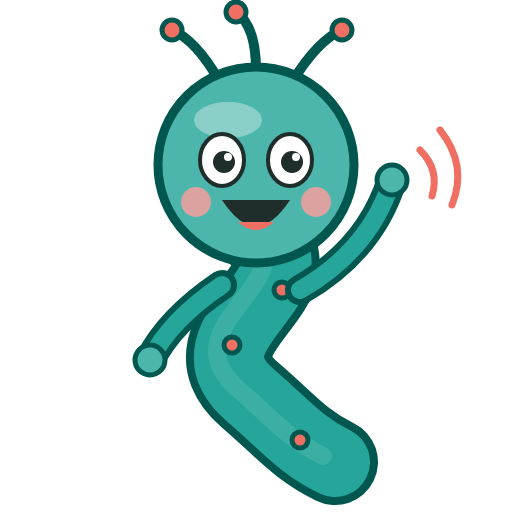
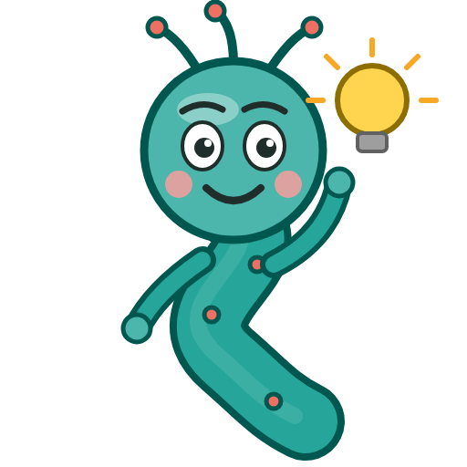
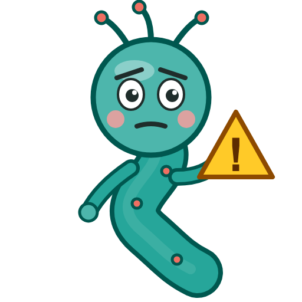

Chapter 7: Stress and the Gut¶
Summary¶
Stress reaches the gut through two systems: the fast fight-or-flight response and the slower hormonal chain called the HPA axis, in which the hypothalamus, pituitary gland, and adrenal glands pass signals down to release cortisol. Cortisol then switches the system off through negative feedback, which works well after short stress but can be overwhelmed by stress that keeps coming back. This chapter shows how stress hormones speed up the colon, activate mast cells, and make the gut lining more permeable in small human experiments, why those symptoms are real rather than "all in your head," and why stress can be linked to flares of Crohn's disease without causing it. It ends with germ-free mice, which revealed that gut microbes help set the stress system early in life, at least in mice.
Concepts Covered¶
- Stress Response
- Fight-or-Flight Response
- Hypothalamus
- Pituitary Gland
- Adrenal Gland
- HPA Axis
- Corticotropin-Releasing Hormone
- ACTH
- Cortisol
- Negative Feedback
- Acute Stress
- Chronic Stress
- Stress and Gut Motility
- Mast Cell
- Early-Life Stress
- Germ-Free Stress Response
Prerequisites¶
- Chapter 1: The Brain in Your Belly (the autonomic nervous system and gut motility)
- Chapter 3: Meet the Microbiome (germ-free mice, correlation vs causation)
- Chapter 4: The Immune System as a Sense Organ (cytokines, inflammation, the gut barrier)
- Chapter 6: Fiber, Fatty Acids, and the Blood-Brain Barrier (intestinal permeability)
Why stress shows up in your stomach

Almost everyone has felt their stomach react before a test, a game, or a hard conversation. This chapter explains which signals carry stress down to your gut, why those feelings are real body events and not "just nerves," and what that means for people living with IBS or IBD. As the nerve that runs between the brainstem and the gut, I have a front-row seat for this one.7.1 Sam's Stomach Before the State Meet¶
It's the morning of the state cross-country championship, and Sam has been awake since 4:30. He ate half a bagel and gave up. By the time the team bus pulls into the course parking lot, his stomach is cramping, and he has already made two trips to the portable toilets. His coach jokes that it's "just nerves." Sam knows the joke is partly true, but it doesn't feel like nothing. His gut is doing something real. (Sam is a fictional student who appears throughout this book. He has IBS with mixed bowel habits, and his symptoms often get worse before big races and tests.)
Riya, his best friend, is there to cheer. She has her own question about stress. When she was diagnosed with Crohn's disease at 14, a relative said, "You've been so stressed with school. That's probably what did it." Riya has wondered ever since whether she gave herself Crohn's by worrying too much. (Riya is also a fictional student who appears throughout this book.)
By the end of this chapter, you'll be able to answer both of them: why stress goes straight to Sam's gut, and why the evidence doesn't support blaming stress for Riya's Crohn's disease, even though stress may affect her symptoms.
7.2 What Is Stress, Biologically?¶
Think about how a town handles an emergency. When the fire alarm rings, the first thing that happens is fast: sirens, trucks, people running. That lasts minutes. Then a slower response begins: the town redirects money, staff, and supplies to deal with the problem over hours or days. When the fire is out, someone has to call off the response, or the town wastes resources and wears out its crews.
Your body's stress system works the same way, with a fast branch, a slower branch, and an off switch. The stress response is the set of changes in the brain, nerves, hormones, and immune system that helps the body deal with a challenge, real or perceived, and then return to balance. The open textbook Anatomy and Physiology 2e (OpenStax) points out that stress can be physical, like an injury or being out in the cold without a coat, or psychological, like a fight with a loved one or a bad day at school. The body uses many of the same systems for both.
The stress response is not a malfunction. It's a survival tool. Your brain can't tell the difference between a predator and a state championship as well as you might hope, so it gets the body ready for action in both cases. Some of what it does to get ready, like pulling resources away from digestion, explains a lot of what Sam feels.
For a deeper look at how the brain's emotion circuits trigger stress, see From Neuron to Bedside, Chapter 11.
7.3 The Fast Lane: Fight-or-Flight¶
The fight-or-flight response is the fast, nerve-driven part of the stress response, in which the sympathetic nervous system and the hormones epinephrine (adrenaline) and norepinephrine prepare the body for sudden physical effort within seconds. OpenStax describes the pathway: in response to danger or stress, a nerve route that begins in the hypothalamus signals the inner part of the adrenal glands to release epinephrine and norepinephrine into the blood. Those hormones raise heart rate and blood pressure, open the airways, and make the liver and muscles break down stored sugar for fuel.
Meanwhile, the body treats digestion as something that can wait. OpenStax notes that the same response narrows blood vessels that supply the digestive tract, and can cause a dry mouth and loss of appetite. Its chapter on the digestive system adds that, in general, sympathetic activation holds back the gut's own neurons (the enteric nervous system from Chapter 1), decreasing gut secretions and movement. That's why Sam couldn't finish his bagel.
So if fight-or-flight slows the gut, why does Sam need the bathroom? Stress also works through a second, slower system that acts differently on different parts of the gut. Its signals can push the colon to speed up even while the upper gut is being held back. To understand that, we need the HPA axis.
7.4 The Slow Lane: The HPA Axis¶
The slower branch of the stress response is a chain of three glands, each telling the next one what to do, a bit like a relay race where each runner hands off the baton.
The hypothalamus is a small region at the base of the brain that links the nervous system to the hormone system and helps control body temperature, hunger, thirst, sleep, and the stress response. The pituitary gland is a pea-sized gland hanging just below the hypothalamus that releases hormones controlling many other glands; its front part (the anterior pituitary) is the one involved here. Each adrenal gland is a small gland that sits on top of a kidney, with an outer layer (the cortex) that makes steroid hormones like cortisol and an inner part (the medulla) that makes epinephrine and norepinephrine.
Together, these three form the HPA axis, short for hypothalamic-pituitary-adrenal axis: the hormone chain in which the hypothalamus signals the pituitary, the pituitary signals the adrenal glands, and the adrenal glands release cortisol. A 2006 review by Smith and Vale in Dialogues in Clinical Neuroscience calls the hormone at the top of this chain central to the stress response. It starts a cascade that ends with stress hormones pouring out of the adrenal cortex.
Here are the three relay runners:
- Corticotropin-releasing hormone (CRH) is a hormone made by neurons in the hypothalamus that tells the pituitary to release ACTH. You'll also see it called corticotropin-releasing factor (CRF). They are two names for the same molecule; this book uses CRH, except when quoting research that uses CRF. CRH is also made outside the HPA axis, including in the gut wall, which becomes important in Section 7.8.
- ACTH (adrenocorticotropic hormone) is a hormone released by the anterior pituitary into the blood that travels to the adrenal glands and tells their outer layer to make cortisol.
- Cortisol is the main stress hormone in humans, a steroid made by the adrenal cortex that helps the body handle longer-lasting stress by raising available fuel and calming inflammation, and that shuts down its own production through feedback.
| Step | Where | Hormone released | What it tells the next step |
|---|---|---|---|
| 1 | Hypothalamus (brain) | CRH | "Pituitary, release ACTH" |
| 2 | Anterior pituitary (below the brain) | ACTH | "Adrenal cortex, make cortisol" |
| 3 | Adrenal cortex (on the kidneys) | Cortisol | Acts on almost every tissue, and tells steps 1 and 2 to slow down |
The fast lane and the slow lane differ mainly in speed and duration. OpenStax describes the adrenal medulla's hormones as the response to acute, short-term stress, and cortisol from the adrenal cortex as the response to longer-term stress. Both start in the hypothalamus, so a single stressful thought can switch on both.
7.5 Cortisol: Not the Villain¶
Cortisol has a bad reputation online, where it's often called "the stress hormone" as if it were poison. MedlinePlus, the US National Library of Medicine's health site, says cortisol affects almost every organ and tissue and helps your body respond to stress, reduce inflammation, control blood sugar and metabolism, and control blood pressure. Too much or too little cortisol can be very serious.
Cortisol also follows a daily rhythm. According to MedlinePlus, cortisol levels are normally highest in the morning and much lower by around 4 in the afternoon, which is why doctors who test cortisol in the blood often take samples at two different times. A morning rise in cortisol is part of how your body gets going each day, not a sign that something is wrong.
One of cortisol's jobs is especially relevant to this book. OpenStax explains that cortisol turns down parts of the immune system, which inhibits inflammation. That's the reason doctors use medicines that copy cortisol's effects, called glucocorticoids or corticosteroids, such as prednisone tablets, steroid inhalers, and hydrocortisone creams. The course of steroid medicine Riya took when she was diagnosed with Crohn's disease belongs to this family of drugs. Doctors decide when and how to use these medicines, because taking them for a long time has serious side effects, and stopping them suddenly can also be dangerous. That's a decision for a patient and their care team, never something to change on your own.
A hormone with a job, not a toxin
I like to think of cortisol as the long-shift worker of the stress response: it keeps fuel available, calms inflammation, and then helps shut the whole system down. The problems come when the shift never ends, not from cortisol existing.
7.6 Negative Feedback: The Stress System's Off Switch¶
A thermostat is the classic example of a system that controls itself. When the room gets warm enough, the thermostat turns the heater off. When it cools down, the heater turns back on. The output (heat) shuts down the thing that produces it.
Negative feedback is a control loop in which the product of a process acts back on the process to slow or stop it, keeping a body system near a set level. Cortisol is a textbook case. When cortisol rises in the blood, it acts on the hypothalamus and the pituitary, telling them to release less CRH and ACTH. Less ACTH means less cortisol. Smith and Vale write that this glucocorticoid feedback plays a prominent role in controlling how large the stress response gets and how long it lasts.
Why does this matter for the gut? Because many of stress's gut effects follow CRH, and cortisol feedback is what turns CRH back down. If feedback works well, a stressful morning becomes a calm afternoon, and the gut settles down too. If the stressor keeps returning before the system resets, the off switch is always one step behind. The brain also has other controls on the HPA axis; Smith and Vale describe inputs from emotion-related brain regions, the midbrain, and the brainstem that can push the hypothalamus up or down. So feedback is the main off switch, but not the only dial.
7.7 Acute Stress Versus Chronic Stress¶
Not all stress is the same. The main difference that matters for the body is how long it lasts and how often it comes back.
Acute stress is short-term stress from a single challenge, such as a race, an exam, or a near-miss on a bike, in which the stress response switches on and then returns to baseline within minutes to hours once the challenge ends. Chronic stress is stress that lasts for weeks or months, or that keeps returning before the body has recovered, such as ongoing family conflict, money problems, bullying, or a long illness, so the stress systems stay switched on or are repeatedly reactivated.
OpenStax describes a classic model of the body's response to long-term stress, the general adaptation syndrome. The first stage, the alarm reaction, is the fight-or-flight response. If stress continues, the body moves to a resistance stage and tries to adapt. If stress lasts much longer, the stage of exhaustion can bring problems such as fatigue, depression, and a weakened immune response, which OpenStax links mainly to cortisol and the HPA axis. The model is a simplification, but it gets one thing right: short stress and long stress are not the same problem.
Acute stress is normal and often useful. A burst of cortisol and adrenaline helps get the body ready for effort, like a race. The worries about health come mostly from chronic stress, when the system rarely gets to rest. Use the MicroSim below to see the difference.
Diagram: HPA Axis Stress Dial¶
Open the HPA Axis Stress Dial fullscreen
MicroSim specification: HPA Axis Stress Dial
Type: microsim
sim-id: ch07-hpa-stress-dial
Library: p5.js
Status: Implemented
Bloom Level: Understand
Bloom Verb: explain
Learning Objective: The learner will explain how cortisol's negative feedback returns the HPA axis to baseline after acute stress but not during repeated (chronic) stress, and describe the gut changes that accompany stress signaling.
Canvas: 530 px drawing area plus 120 px controls (iframe 652 px); responsive to about 380 px wide.
Controls: Start/Pause, Reset, Cortisol feedback on (checkbox, default on); Stress level slider (0 to 10, step 1, default 6); Pattern select (One stressful event, acute: a 2-hour stressor at hour 6; Stress every day, chronic: 12 stressful hours each day). One run lasts 96 illustrative hours.
Rules: A brain stress signal rises quickly while the stressor is on and fades over a few hours after it ends. CRH follows the brain signal, ACTH follows CRH, and cortisol follows ACTH, each with a short delay. With feedback on, cortisol above baseline lowers CRH and ACTH. Repeated stress slowly builds a background load that raises CRH and weakens feedback, so levels don't fully reset between stressful days. Colon movement follows CRH quickly; mast cell activation follows CRH but builds and fades slowly. Gut sensitivity and gut permeability are driven by mast cell activation plus CRH, not by cortisol directly. All values are relative and illustrative.
Feedback: Gland boxes turn from green to red as their hormone rises; a graph plots CRH, ACTH, and cortisol with the stressor shaded; a status line explains what is happening (stressor on, resetting after acute stress, not fully resetting with chronic stress, feedback off).
Provenance: Sections 7.4 to 7.9 (Smith and Vale 2006; OpenStax A&P 17.6; Taché and Million 2015; Fukudo 1998; Barbara 2004; Vanuytsel 2014). All model numbers are illustrative.
Start with the default, One stressful event (acute), and press Start. Watch the order: CRH rises first, then ACTH, then cortisol, and the colon in the gut panel speeds up while the stressor (shaded) is on. Then notice what happens after the stressor ends. Rising cortisol pushes CRH and ACTH back down, and within a few hours everything returns to rest. Now uncheck Cortisol feedback on and run the same event again. The peak is higher and the return is slower, because nothing is actively turning the system off.
Next, turn feedback back on and choose Stress every day (chronic). Watch the gut sensitivity meter over several days. Each stressful day sets off the same chain, but the levels between days don't fully reset, and the sensitivity meter keeps creeping up, because in the model mast cell activation builds faster than it fades. Try stress levels of 3 and 9 to see how intensity and repetition combine.
What this model leaves out
- Real cortisol has a daily rhythm (highest in the morning), which the model ignores; its resting level is flat.
- Chronic stress changes the HPA axis in complicated ways. In some people cortisol stays high, while in others the response becomes blunted. The model's single "load" variable is a teaching simplification.
- The fight-or-flight branch (epinephrine and norepinephrine) is left out, along with sleep, food, exercise, and individual differences in how people perceive stress.
- The gut effects are shown as three meters, and in the model, permeability is driven by CRH and mast cells, not by cortisol. That follows the 2014 human study in Section 7.9, where cortisol marked who was truly stressed but a mast cell blocker stopped the effect. In reality, gut effects differ by gut region, by person, and by condition, and most of the mechanisms come from animal studies and small human experiments.
- Times and levels are made-up teaching numbers, not measurements.
7.8 Stress and Gut Motility¶
Back to Sam's mystery: if fight-or-flight slows digestion, why does stress send him to the bathroom? Part of the answer is CRH.
Stress and gut motility describes how stress signals change the speed and pattern of muscle contractions in the digestive tract; in animal studies and small human experiments, stress hormones such as CRH speed up movement in the colon. A 2015 review by Taché and Million explains that CRH (they call it CRF) and its receptors are found in both the brain and the colon. In animal experiments, switching on one type of CRH receptor, called CRF1, in either place reproduced key features of IBS with diarrhea: faster colon movement, more bowel movements, watery stool, and increased pain sensitivity. Drugs that block CRF1 reduced these effects in animals.
Does this happen in people? A small study by Fukudo and colleagues in 1998 tested it directly. They gave CRH by injection to 10 people with IBS and 10 healthy volunteers while measuring pressure waves in their intestines. CRH increased movement in the lower colon in both groups, and the increase was larger in the people with IBS. The IBS group also had a bigger ACTH response and abdominal symptoms that lasted longer. That's a small, short experiment, but it shows the same hormone acting on the human colon, and it hints that the system is more reactive in some people with IBS.
What about a pill that blocks CRH for IBS? Taché and Million note that, so far, the promising animal data have not turned into treatments: no CRF1-blocking drug is used to treat IBS. This is a good example of why the Hype Meter asks, "Mouse or human?"
Two systems, two directions

Here's how I keep it straight: fight-or-flight tends to slow the upper gut (goodbye, appetite), while CRH signaling can speed up the colon (hello, bathroom). Both can happen in the same stressful morning, which is exactly what Sam felt.7.9 Mast Cells: Where Stress Meets the Gut's Immune System¶
The gut wall is full of immune cells, and one type sits right at the meeting point of stress, nerves, and the gut barrier. A mast cell is an immune cell that lives in tissues, including the gut lining, and stores chemical signals such as histamine and an enzyme called tryptase in small packets that it can release quickly, causing inflammation, changing nerve signaling, and loosening the barrier. You may know mast cells from allergies, where they help cause symptoms like itching and swelling.
In 2004, Barbara and colleagues looked closely at colon tissue samples from 44 people with IBS and compared them with healthy controls. In 34 of the 44 (77%), mast cells took up more of the colon lining than in controls. The IBS samples also released more histamine and tryptase. Mast cells within 5 micrometers of a nerve fiber (very close) were also more common in IBS, and only those close-to-nerve mast cells were linked to how severe and frequent people's abdominal pain was. That's a correlation, not proof of cause, but it suggests one way the immune system could make gut nerves more sensitive. You'll explore that idea in Chapter 8.
Stress connects to mast cells, too. In 2014, Vanuytsel and colleagues ran two experiments in healthy volunteers. In the first, 23 people went through several conditions, including giving a public speech, a well-known way to cause stress in a lab. Then they drank a sugar solution to measure how permeable their small intestine was (the lactulose-mannitol test from Chapter 6). Public speaking made the small intestine more permeable, but only in people whose cortisol rose, meaning those who were truly stressed. Here, cortisol worked as a sign of how stressed someone was, not as the proven cause of the change.
In the second experiment, with 13 volunteers, an injection of CRH copied the effect, and a drug that keeps mast cells from releasing their contents (a mast cell stabilizer) blocked both the CRH effect and the public-speech effect.
Put together, these studies sketch a pathway that runs through CRH and mast cells rather than through cortisol: stress raises CRH, CRH activates mast cells, and mast cells make the gut lining more permeable and possibly make nearby nerves more sensitive. Each link has some human evidence, but the studies are small, and the full chain hasn't been proven in one group of people.
Hype Meter: "Stress can physically change how your gut works"
7.10 Did Stress Cause Riya's Crohn's Disease?¶
Now for Riya's question. It's one of the most common things people with IBD hear, and it can carry a lot of guilt.
Start with what's known about causes. The National Institute of Diabetes and Digestive and Kidney Diseases (NIDDK) says that doctors aren't sure what causes Crohn's disease. It lists an abnormal immune reaction against bacteria in the intestines, genes (Crohn's can run in families), environmental factors such as smoking, and differences in gut microbes. Stress is not on that list. You'll study these causes in detail in Chapter 9.
Stress does seem to matter for flares, the periods when symptoms come back. In a 2010 study from Manitoba, Canada, Bernstein and colleagues followed 704 people with IBD from a population-based registry, surveying them every three months for a year about possible triggers: pain relievers called NSAIDs, antibiotics, infections, major life events, mood, and perceived stress. Flares were identified with a validated symptom questionnaire, not with scopes or blood tests for inflammation. When they compared 174 people who had a flare with 209 who didn't, high perceived stress was the only factor that remained linked to flares in their final analysis, with about 2.4 times the odds of a flare. NSAIDs, antibiotics, and infections outside the gut were not linked in this study.
That's a meaningful finding, but notice what kind of evidence it is. It's an association in people, not an experiment. It's possible that stress triggers flares, that early, unnoticed inflammation makes people feel more stressed, or both. It also measured both stress and flares by questionnaire, so some "flares" may have been symptom changes without new inflammation. So the careful summary is: there's no good evidence that stress causes Crohn's disease, but higher stress is linked to more flares, and managing stress is a reasonable part of care.
That two-way possibility shows up beyond IBD. In a 12-year Australian study of more than 1,000 adults, Koloski and colleagues (2012) found that among people without a gut disorder at the start, higher anxiety predicted developing a functional gut disorder (such as IBS) later. And among people without high anxiety or depression at the start, having a functional gut disorder predicted higher anxiety and depression 12 years later. The brain affects the gut, and the gut affects the brain.
Hype Meter: "Stress causes IBD"
If you're going through this
If someone has told you that stress caused your Crohn's disease, colitis, or IBS, please know that the evidence doesn't support blaming you. Stress can make symptoms worse, which means stress tools can be part of your care, alongside medicine, not instead of it. Ask your doctor about options like counseling or gut-directed therapies, and tell your care team if stress or worry is affecting your sleep, schoolwork, or mood.
Stress, worry, and low mood often travel together with gut conditions. Later chapters cover anxiety and depression in detail. If things feel heavy right now, you don't have to wait for a later chapter to get help.
If you are struggling right now
If you are thinking about suicide or are in crisis, call or text 988 to reach the 988 Suicide & Crisis Lifeline (in the US), or go to the nearest emergency room. Outside the US, you can find a helpline at findahelpline.com. You can also talk to a parent, school counselor, or doctor.
7.11 Early-Life Stress: Setting the Dial Young¶
Stress early in life seems to leave a longer mark. Early-life stress is serious or repeated stress experienced before birth, in infancy, or in childhood, such as separation from caregivers, neglect, or trauma, that may change how the stress system and the gut-brain axis respond later in life.
Much of the direct evidence comes from animals. In a 2009 study, O'Mahony and colleagues separated newborn male rat pups from their mothers for 3 hours a day from day 2 to day 12 after birth. As adults, these rats had higher levels of corticosterone (the main stress hormone in rodents), produced more fecal pellets when placed in a new, stressful situation, had more sensitive guts, showed a stronger immune response in a lab test, and had different gut microbes compared with rats that stayed with their mothers. The researchers proposed this as a model for studying IBS and depression.
In people, researchers have reported that difficult early-life experiences are associated with a higher chance of several conditions later, including depression and IBS, as the O'Mahony paper's background notes. Those human links are correlations: many other things that come with hard early experiences, like poverty or illness, could also play a role. And a hard early life does not doom anyone. The stress system can change throughout life, and support, safety, and treatment matter at every age.
For families
Stress-related gut symptoms are real, not attention-seeking or "just in their head," and saying so out loud helps. Phrases like "Just relax" or "You're making yourself sick" usually add pressure; "Your body is reacting to a lot right now, what would help?" works better. Before known stressful events, like exams or races, simple planning (bathroom access, a calm morning routine, extra time) can lower the load. If gut symptoms come with ongoing sadness, panic, or trouble at school, ask your child's doctor about support for both.
7.12 Microbes Train the Stress System: Germ-Free Mice¶
So far, the arrows have pointed from the brain to the gut. One famous experiment showed an arrow pointing the other way.
In 2004, Sudo and colleagues at Kyushu University in Japan compared germ-free mice (raised with no microbes, from Chapter 3) with mice that had normal gut microbes. They put both groups through a mild stressor, an hour of restraint in a small tube. The germ-free mice had a much bigger rise in ACTH and corticosterone than the normal mice. This exaggerated reaction is called the germ-free stress response: the larger-than-normal HPA axis response to stress seen in mice raised without any microbes, which suggests that gut microbes help tune the stress system as it develops.
The details are what made the study famous:
- The exaggerated response showed up with restraint stress but not with a different stressor (ether), so it wasn't a general malfunction.
- Giving germ-free mice one bacterial species, Bifidobacterium infantis, reversed the exaggerated response.
- Giving one harmful strain of E. coli made the response bigger.
- Giving germ-free mice feces from normal mice partly corrected the response, but only when it was given early in life. Given later, it didn't help.
That last point suggested a "window" during development when microbes help set the stress system. Other mouse research points the same way in reverse: in 2011, Bailey and colleagues found that a social stressor changed the gut bacteria of mice, lowering one group (Bacteroides) and raising another (Clostridium), and that mice whose microbes had been reduced with antibiotics didn't show the usual stress-driven rise in the inflammatory signal IL-6. In mice, at least, stress shapes microbes and microbes shape the stress response.
What about people? The human evidence is much thinner. Remember the 2020 trial from Chapter 6: 66 healthy men given colon-delivered short-chain fatty acids, or SCFAs (molecules made by gut microbes), for one week had a smaller cortisol response to a stressful task than men given placebo. That's one small study, in men only, with no change in mood. A 2019 review by Cryan and colleagues in Physiological Reviews concludes that stress can affect the microbiota-gut-brain axis at every stage of life, while noting that much of the evidence comes from animal models.
Mice make corticosterone, people make cortisol

Watch for this slip in headlines: the main stress hormone in mice is corticosterone, not cortisol, so "germ-free mice had higher cortisol" is wrong. It's a small detail that tells you whether a writer actually read the study.Hype Meter: "Your gut bacteria control your stress response"
Let's apply the six questions to the Sudo study, since it launched much of this field.
How to read a gut-brain claim: the 2004 germ-free mouse stress study
| Question | This study |
|---|---|
| Mouse or human? | Mouse only. Germ-free, normal, and single-microbe mice were compared. The hormones measured were ACTH and corticosterone. |
| Correlation or cause? | Cause, in mice. The researchers changed which microbes the mice had and measured the stress response. Germ-free mice differ from normal mice in many ways, though, and people are never germ-free. |
| How many? | Moderate for a mouse study. The main time-course experiment used about 50 germ-free and 50 normal mice in total (6 to 11 per time point); other experiments used about 18 to 24 per group. |
| How long? | The stress test was 1 hour of restraint. Mice were tested as young adults, with some groups given microbes 1 or 3 weeks before testing. |
| Who paid for it? | A research grant from Japan's Ministry of Education, Culture, Sports, Science and Technology, and the Yakult Bioscience Research Foundation (Yakult is a company known for probiotic drinks). |
| Is something being sold? | No product was tested or sold in the study. The funding link to a probiotic company's foundation doesn't make the results wrong, but keep it in mind when people use this study to promote probiotics. |
The conclusion: this experiment shows that, in mice, early microbes help tune the HPA axis. It does not show that a probiotic will lower a person's stress, and the timing result suggests that even in mice, adding microbes later in life didn't fix the response.
At the Bedside: Finals Week¶
Meet the patient (fictional)
Daniel is an 18-year-old college freshman who moved away from home in August. During midterms and again during his first finals week, he had cramping belly pain and urgent, loose stools several times a day, sometimes running out of exams to find a bathroom. His symptoms ease over winter break. Thinking back, he realizes he had milder versions of this during junior-year exams in high school. He's embarrassed, and he's started skipping study groups in case he needs to leave.
What the doctor checks: The campus health doctor takes a careful history: when symptoms happen, what stool looks like, whether pain improves after a bowel movement, and whether there are warning signs like blood in the stool, weight loss, fever, symptoms that wake him at night, or a family history of IBD or celiac disease. Daniel has none of these. His exam is normal, and basic blood and stool tests to look for anemia, inflammation, infection, and celiac disease all come back normal.
Connecting the signals: Daniel's symptoms track stress closely. During exams, his HPA axis and fight-or-flight systems are switched on. CRH signaling can speed up colon movement, and stress-related mast cell activation can increase gut permeability and may make gut nerves more sensitive, so normal gut activity is felt as pain and urgency. His history over more than two years, with pain linked to bowel movements and changes in stool, fits a pattern doctors recognize.
Diagnosis: Irritable bowel syndrome with predominant diarrhea (IBS-D), made using symptom-based criteria after tests ruled out other causes. Many published studies used the Rome IV criteria, and the newer Rome V criteria (published in 2026) are now the current version. You'll learn how these criteria work in Chapter 10.
Why it happens: IBS is a disorder of gut-brain interaction. In people with IBS, the colon can respond more strongly to CRH than in people without IBS (Section 7.8), and mast cells near gut nerves are linked with pain (Section 7.9). Stress doesn't create the condition out of nothing, but it turns up signals that are already more reactive.
The mind-body side: Daniel's worry about having symptoms during exams has become its own stressor, which feeds back into his gut, a loop that can keep symptoms going. The doctor makes clear that his symptoms are real and physical, not imagined. Together they talk about sleep, routines, and campus counseling services, and she explains that psychological treatments for IBS work on the gut-brain connection itself, not because the problem is "in his head."
Treatment today: Care for IBS usually starts with explanation and reassurance, a plan for exam days (for example, arranging bathroom access with the disability services office), and attention to sleep and regular meals. Depending on symptoms, the doctor may suggest diet changes with a dietitian, medicines for diarrhea or pain, or a referral for a brain-gut behavioral therapy such as cognitive behavioral therapy (CBT) or gut-directed hypnotherapy. Which options fit is a decision for Daniel and his care team.
What's new in research: In 2024, Goodoory and colleagues published a network meta-analysis in Gastroenterology combining 42 randomized trials with 5,220 participants. Several brain-gut behavioral therapies, including self-guided CBT, face-to-face multicomponent behavioral therapy, and face-to-face gut-directed hypnotherapy, may improve abdominal pain in adults with IBS, and none was better than another. Evidence grade: Moderate. No trial was at low risk of bias in every area, so the benefits may be somewhat overestimated, but the effect showed up across many trials.
Your turn: reason through a variation
Daniel's roommate, Marcus, also gets diarrhea during finals. But Marcus has also lost 10 pounds without trying since September, sometimes sees blood in his stool, and wakes up at night needing the bathroom. He says, "It's just stress, like Daniel." How would you reason about this?
Answer: Marcus has warning signs that stress alone doesn't explain: unplanned weight loss, blood in the stool, and nighttime symptoms. These need a doctor's evaluation for conditions like inflammatory bowel disease or infection. Stress can make many gut problems worse, but it's never safe to assume "it's just stress" when warning signs are present.
This is a fictional teaching case. It is not medical advice. If you or someone you know has symptoms like these, talk to a doctor.
Common Misconceptions¶
Myth: Stomach symptoms from stress are imaginary or "all in your head."
Reality: Stress hormones cause measurable changes in the gut. In small human studies, CRH sped up the colon and public-speaking stress made the small intestine more permeable. The brain and gut are connected by real nerves and hormones, so a stress-related symptom is a real body event.
Myth: Cortisol is purely bad, so less is always better.
Reality: Cortisol is essential. It helps control blood sugar and blood pressure, calms inflammation, and switches off the stress response through negative feedback. Too little cortisol is dangerous, just like too much. Problems come mostly from stress that never lets the system rest.
Myth: Stress causes inflammatory bowel disease.
Reality: Doctors aren't sure what causes Crohn's disease, but NIDDK lists immune, genetic, environmental, and microbial factors, not stress. In people who already have IBD, high perceived stress is linked to more flares, which is a different and narrower claim.
Myth: You can "detox" or "flush" cortisol with a special drink or supplement.
Reality: Your body already controls and clears cortisol on its own, mainly through negative feedback that lowers its production. Products that promise to "detox cortisol" are selling a solution to a problem described in a misleading way. If you're worried about stress or hormones, talk to a doctor.
Your Gut Check¶
Test yourself. Try each one before you open the answer.
1. Claim Check: "Your bloating is high cortisol! Gut bacteria control your stress hormones, so our probiotic gummies lower cortisol and calm your gut in just one week."
Grade: Hype. The strongest evidence that microbes affect the stress response comes from germ-free mice, which make corticosterone, not cortisol, and have no microbes at all. In people, evidence is limited to small, short trials, such as one week of colon-delivered SCFAs in 66 men, which lowered the cortisol response to a stress test but didn't change mood. No study in this chapter tested these gummies, and bloating has many causes. A careful version would say: "In mice, gut microbes help set the stress system early in life; whether any product changes stress hormones in people is still being studied."
2. Predict: Sam has a big chemistry test on Friday and the state meet on Saturday. Using the HPA axis, predict what happens to his cortisol across the two days, and what might happen to his gut.
Each event should trigger the chain: CRH from the hypothalamus, ACTH from the pituitary, and cortisol from the adrenal glands. If the events are close together, cortisol from Friday may not fully settle before Saturday's stress starts again, so the system has less time to reset. In his gut, CRH signaling could speed up his colon and contribute to urgency, while fight-or-flight could reduce his appetite. Because he has IBS, his gut may react more strongly than a friend's.
3. Explain: In the MicroSim, turning off cortisol feedback makes the cortisol peak higher and the return slower after one stressful event. Explain why, using the idea of negative feedback.
Normally, rising cortisol acts on the hypothalamus and pituitary to reduce CRH and ACTH, which reduces further cortisol release. That limits how high cortisol climbs and helps it fall once the stressor ends. Without feedback, CRH and ACTH stay high for longer, so the adrenal glands keep making cortisol until the brain's stress signal fades on its own, which takes more time.
4. Apply: A news story reports, "Mice raised without germs panic more under stress, so kids should eat more dirt." Use what you know about the Sudo 2004 study to identify what the headline gets wrong.
The study measured stress hormones (ACTH and corticosterone), not "panic." It compared mice with no microbes at all to mice with normal microbes, which isn't like children who already have trillions of microbes. It also found that adding microbes later in life didn't fix the response, and that one harmful E. coli strain made the response worse, so "more germs" isn't automatically better. And it was in mice, so it can't tell us what children should eat.
5. Read the data. In the 2014 study by Vanuytsel and colleagues, healthy volunteers drank a sugar solution, and researchers measured the lactulose-to-mannitol ratio in their urine (a higher ratio means a more permeable small intestine). Here are average values from the paper's abstract:
| Condition | Lactulose-mannitol ratio (average) |
|---|---|
| Control (first study, 23 volunteers) | 0.030 |
| Indomethacin, a pain reliever known to raise permeability (positive comparison) | 0.071 |
| Public speech (stress) | 0.059 |
| Control (second study, 13 volunteers) | 0.028 |
| CRH injection | 0.042 |
5. What does this data show, and what can't it show?
It shows that public-speaking stress roughly doubled the ratio compared with control (0.059 vs 0.030), an effect in the same range as a drug known to raise permeability, and that CRH alone also raised it (0.042 vs 0.028). That supports the idea that stress and CRH can make the human small intestine more permeable, at least briefly. It can't show that this causes symptoms or disease, since the volunteers were healthy and the tests lasted hours. It also can't tell us about people in general, because the groups were small (23 and 13), and the speech effect appeared only in people whose cortisol rose. A helpful follow-up would repeat the test in a larger group, including people with IBS, and track symptoms during real-life stress.
Exercises¶
Remember¶
- List the three parts of the HPA axis in order and name the hormone each one releases.
Answer
Hypothalamus (CRH), anterior pituitary gland (ACTH), adrenal cortex (cortisol).
- What is a mast cell, and name one chemical it releases.
Answer
A mast cell is an immune cell that lives in tissues, including the gut lining, and stores chemical signals it can release quickly. Examples include histamine and tryptase.
Understand¶
- Explain how negative feedback keeps a single stressful event from raising cortisol forever.
Answer
As cortisol rises, it acts on the hypothalamus and pituitary to reduce CRH and ACTH. With less ACTH, the adrenal glands make less cortisol, so once the stressor ends, cortisol falls back toward its resting level.
- Explain why fight-or-flight can reduce appetite while stress can also cause diarrhea.
Answer
Fight-or-flight signals generally hold back the enteric nervous system and reduce gut secretions and movement, and they can reduce appetite. Separately, CRH signaling in the brain and colon can speed up colon movement. The two systems act on different parts of the gut at the same time.
Apply¶
-
Use the MicroSim to run one stressful event at stress levels 3, 6, and 9, with feedback on. Record the highest cortisol point on the graph (as a rough fraction of the graph's height) and the number of hours until it returns to rest. Describe the pattern, and explain why these numbers can't be compared to real cortisol measurements.
-
Riya's younger cousin, who has no gut condition, says she always needs the bathroom before swim meets and wonders if she has IBS. Using this chapter, explain what is probably happening and what would make a doctor consider IBS instead.
Analyze¶
-
Compare the Bernstein 2010 IBD flare study and the Sudo 2004 germ-free mouse study using four of the six questions. Which one tells you more about people, and which one is better at showing cause?
-
The Koloski 2012 study found that anxiety predicted later functional gut disorders and that gut disorders predicted later anxiety. Analyze why this two-way finding makes it hard to say "anxiety causes IBS" or "IBS causes anxiety," and suggest one kind of study that could help untangle it.
Evaluate¶
-
A wellness website says that because CRH speeds up the colon, "stress-blocking supplements" can cure IBS. Evaluate this claim using what Taché and Million (2015) reported about CRF1-blocking drugs, and assign a Hype Meter grade.
-
Some people argue that telling IBS patients "stress affects your gut" is unhelpful because it sounds like blame. Others say it is empowering because it opens up more treatment options. Judge which framing is better, and write two sentences a doctor could say that keep the science accurate without blaming the patient.
Create¶
-
Design a study that tests whether exam stress changes gut permeability in high school students with and without IBS. Describe your groups, when you would take measurements, what you'd measure (and how), and what ethical protections you'd need.
-
Create a one-page "exam day plan" for a student like Sam that uses at least three ideas from this chapter (for example, the timing of cortisol, the speed-up of the colon, and the role of worry), without giving any medical or medication advice.
Key Takeaways¶
- The stress response has a fast branch (fight-or-flight, driven by the sympathetic nervous system, epinephrine, and norepinephrine) and a slower branch (the HPA axis: hypothalamus, pituitary gland, and adrenal glands).
- In the HPA axis, CRH from the hypothalamus triggers ACTH from the pituitary, which triggers cortisol from the adrenal cortex. Cortisol is essential: it helps control blood sugar, blood pressure, and inflammation, and it follows a daily rhythm.
- Negative feedback lets cortisol shut down CRH and ACTH, so acute stress resolves. Chronic stress keeps reactivating the system before it can fully reset.
- Stress changes the gut in measurable ways. In small human studies, CRH sped up the colon, and public-speaking stress made the small intestine more permeable by a route that depended on mast cells; mast cells near nerves are linked to IBS pain. Stress-related gut symptoms are real.
- There's no good evidence that stress causes IBD, but high perceived stress is linked to more flares, and brain and gut affect each other in both directions over time.
- In animals, early-life stress has long-lasting effects on the stress system and the gut; in people, links between early adversity and conditions like IBS are associations.
- Germ-free mice show an exaggerated stress-hormone response that early colonization with microbes partly prevents. Human evidence that microbes shape the stress response is still Preliminary.
You mapped the stress highway!
You now know why Sam's stomach knows race day is coming, and why Riya didn't cause her Crohn's by worrying. Next, in Chapter 8, we'll follow those sensitized gut nerves to the brain and learn how the same signal can turn into more pain.